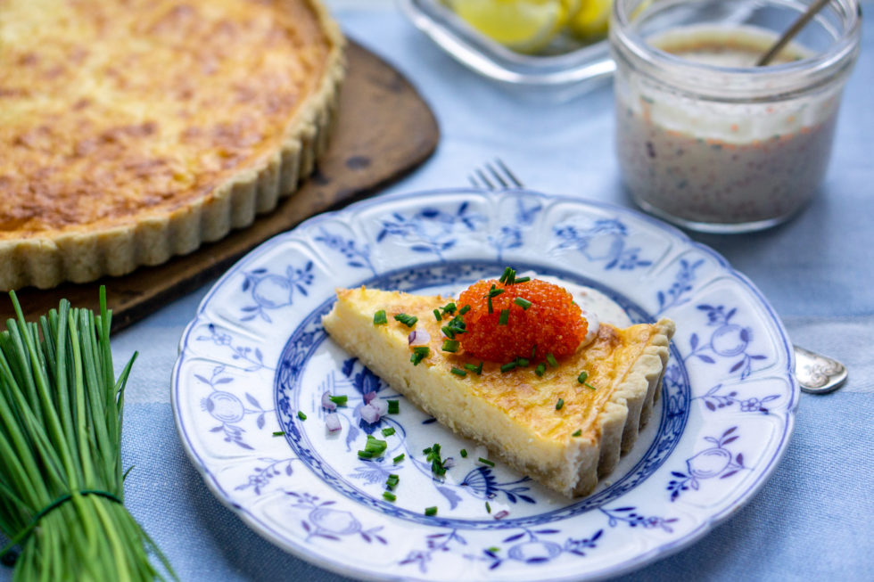

Västerbotten Cheese Pie

Description
Some dishes sweep in and become a natural part of the tradition in only a few short years. That’s the case with Västerbottensostpaj, a pie made with Västerbotten cheese. According to food historian Rickard Tellström,
the pie is the Swedish version of the French Quiche Lorraine, which became a big hit in the 80s.
The Västerbotten cheese pie is easy to make and to prepare in advance. You can guess how it sneaked into the hearts of the Swedes, right?
Yes, it was through smörgåsbord. Today, you can expect to find this golden pie at buffet tables at parties and celebrations such as Midsummer. It is pretty much mandatory for a Swedish crayfish party.
Ingredients
For the pie crust
- 3 dl (1 1/3 cup) flour
- 125 g (1/2 cup) cold butter
- 1-2 tbsp cold water
For the filling
- 3 eggs
- 1 dl (2/5 cup) milk
- 1 dl (2/5 cup) cream
- 200 g (7 oz) Västerbotten cheese (or another flavorful cheese such as Cheddar)
- 1/2 tsp salt
- 1 pinch white pepper
Fish roe sauce (optional)
- 2 dl (4/5 cup) crème fraîche
- 3 tbsp fish roe
- 2 tbsp finely chopped dill
- 2 tbsp finely chopped dill
- salt, pepper, and lemon juice to taste
Instructions
- Prepare the pie crust by mixing together the flour, butter, and one tablespoon of water in a large bowl until it comes together into a dough.
I do this with my hands. If necessary, add another tablespoon of water, making it two in total. Wrap the dough in cling film and place it in the fridge for 20-60 minutes.
- Set the oven to 200°C (390°F).
- Make the filling by whisking together the eggs, milk, and cream together. Add the grated cheese. Season with salt and white pepper and stir until it is all well combined.
- Take out the dough and press it out into a pie pan. Pick it with a fork and pre-bake the crust in the oven for 10 minutes.
- Add the filling to the pre-baked pie crust. Bake in the oven for 20-25 minutes, until the filling has set and become a bit golden.
Be careful so it doesn’t burn — add a bit of aluminum foil on top and bake the pie a bit longer if the surface is ready but the filling still loose when you move the pie. However, the pie will set a bit more after cooling. The pie is best served lukewarm.
- If you want to make a simple cold fish roe sauce, take a small bowl and stir together crème fraîche with fish roe, chopped dill, and chopped onion. Season with salt, pepper, and a squirt of lemon juice according to your own taste.